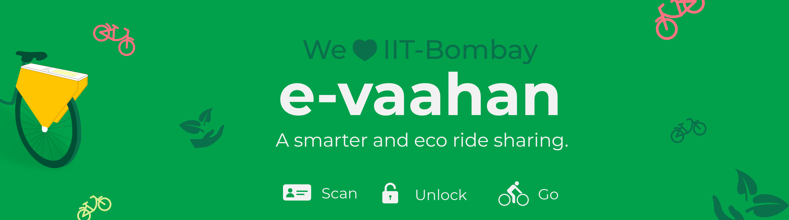
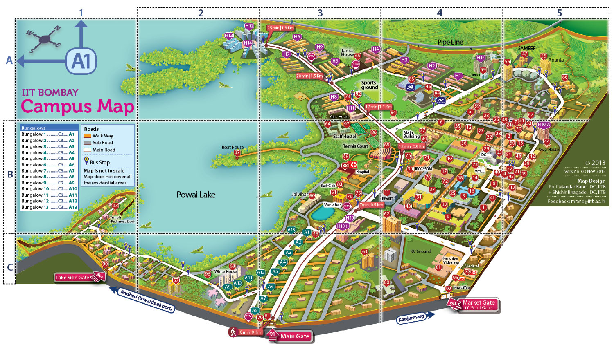
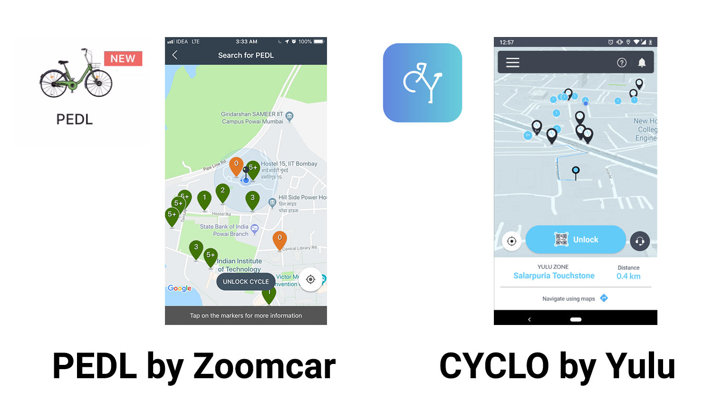
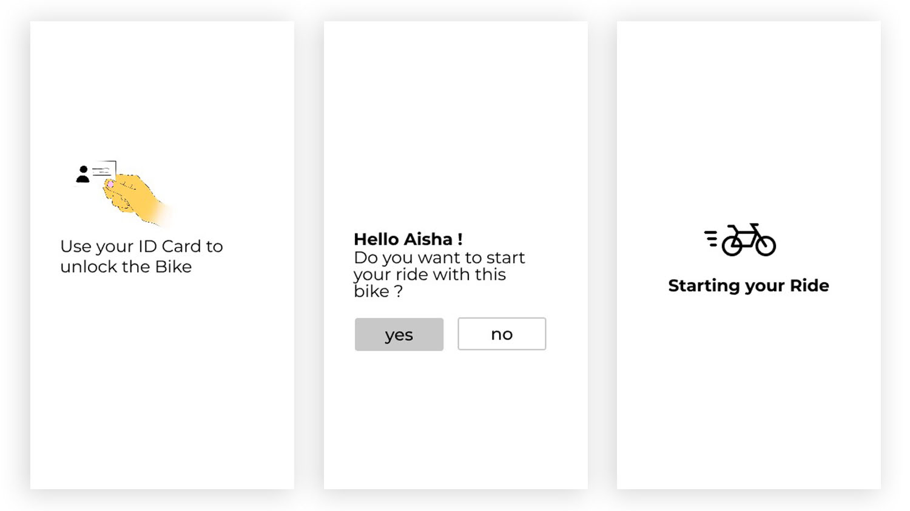
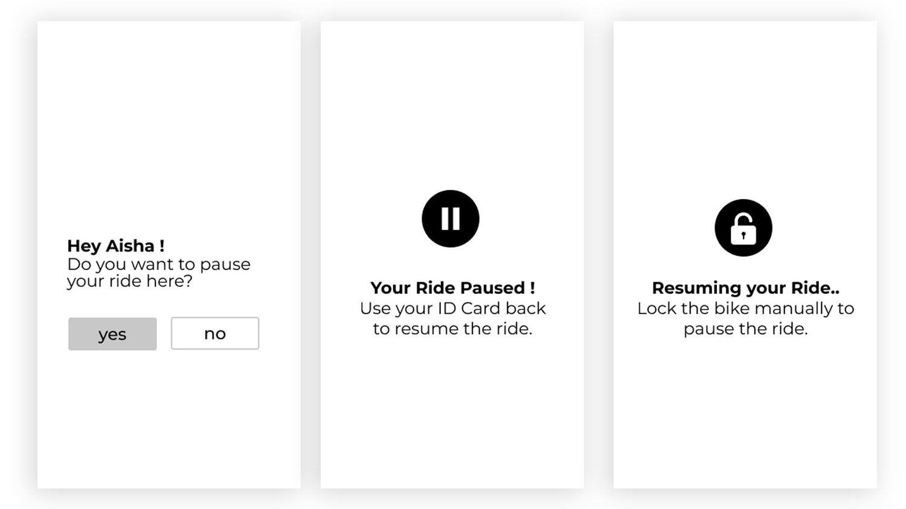
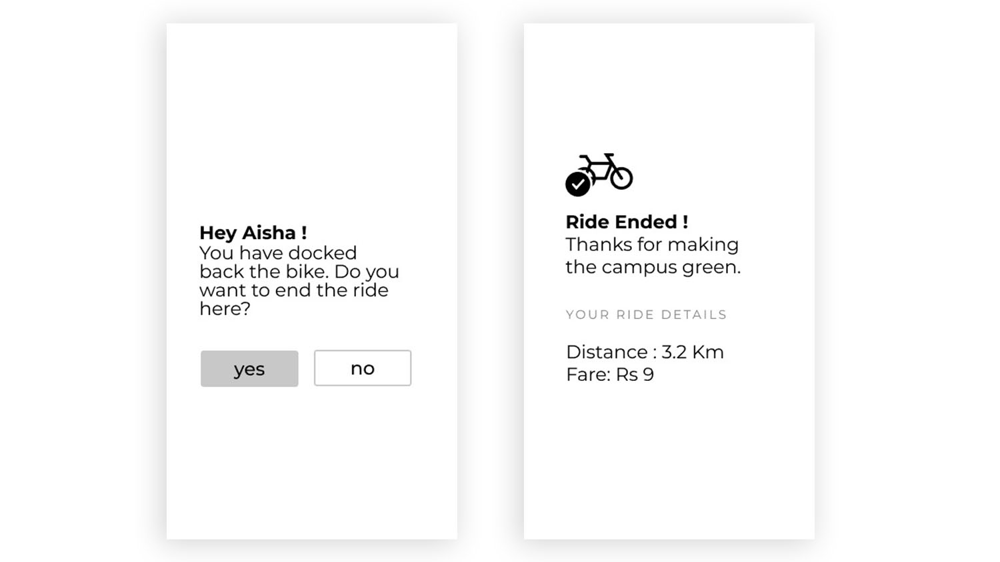

e-vaahan
A greener way of ride-sharing inside university campus .

IIT Bombay has an area of more than 2.396 gross square feet. The campus is divided into clusters of buildings. All department annexes are connected by a corridor named Infinite Corridor. Beyond the Convocation Hall lie 16 hostels. Apart from the infinite corridor all the facilities and departments are also connected by streets. Commuting on the streets of IIT Bombay happens by foot and by cycling. The campus is restricted for three and four wheelers considering the environment of the campus. Still, you have the liberty of ran over by vehicles than the leopards as we regularly spot fast-moving vehicles. A walk through the 1.8km long main central street which connects all the streets takes around 25 min.

A design challenge was given to order, to structure, and to remember as part of the Cognitive dimension when Designing for Interactivity. Guided by Prof. Ravi Poovaiah, we started off with a task of creating a digital campus. To identify the pain areas inside the campus tasks involved has been listed out. These tasks vary from student activities to academic and transportation and productivity. After the restriction of vehicles inside the campus, auto rickshaws have become the primary commute inside the campus. Ordering and structuring the transportation around us makes it easier to commute and travel. Increases in the use of auto rickshaw for commuting have meant that transportation has become costly and inaccessible every day for a broad range of people.
Currently, IIT Bombay has a total of 14 academic departments, six centres, one school, and three interdisciplinary programmes. The university is a home for 3600 Undergraduates and 2000 Postgraduates. Provided with the transportation these students regularly are commuting with their own personal bikes. Auto rickshaws play a short role in transportation with costly meters and leave most of the commuters with more waiting time. With the tightly packed and early day starting academic schedules students who prefer a pedestrian commuting need a safer and a faster mode of travel. So the UG and PG students have been identified as the commuters where a shared bike solution which is economical and environment-friendly is needed.
For the past few months, PEDL by Zoomcar and CYCLO by Yulu has been installed inside the campus. Both PEDL and YULU bikes provide a ride-sharing inside the campus. These services allow the students to commute using bikes which are available at several bike zones inside the campus. The zones are available to the users through a mobile application through which you can view the availability of bikes and reach the zone and start your journey. To understand these service we started off by using the service and following are the observations made.

CYCLO by Yulu:
1. Requires an active Bluetooth connectivity between the device and the bike.
2.Easily accessible by scanning the QR code available on the bike and using the 4-Digit PIN thrown by the app to unlock.
3. The Ride can be paused only at the specified YULU zones.
4. While pausing and ending the Ride the app always throws an error because of either Network connectivity or Bluetooth connectivity resulting in meaningless pauses and resumes.
5. Bikes take a big buffer time to unlock after resuming the ride.
6. Either Bike/Mobile Application do not recognise the YULU Zones and requires the app to be closed and re-opened.
PEDL by Zoomcar:
1. Provides a better connectivity than CYCLO but still resides the same problems.
2. Inaccessible to IOS Users resulting in restricting to android users.
We went on with a primary research of understanding bike-sharing services in New York city, Hyderabad Metro, MIT University and Red Bikes. IIT Bombay campus has employed a shuttle service inside the campus called "Tum Tum". It was available until a couple of years ago. Reasons for terminating this service has been identified as unavailability of drivers and their maintenance. Students at the university remember the service as the widely used service as it commutes over all the streets and it was crowded since the quantity of the vehicles were very less. Students were asked to pay an amount of 1000 bucks to avail this service. After discussing within the team we realised that the part of the users who use mobile to access the bike-sharing service are unhappy about it which requires a complete engagement with the mobile application.
A huge chunk of users is students travelling from their hostel to college and back spending just above 60 minutes/day on average. After interviewing a lot of these students, we found that most hire autos or ride their own bikes to reach early as in order to attend the lecture on time.
Knowing this behaviour of long walks and late arrivals, we sensed an opportunity that we could do something more. We could actually provide an easy and convenient bike ride which can be accessed throughout the day from their hostels or departments.
Drawing inspiration from the CYCLO & PEDL Services, we started thinking of a similar ride-sharing service. With the help of the device attached to the bike, we can isolate the user from the mobile application, and almost put them in their enjoyable riding experience with a simple interface to use from.
A Big reference for us has been the SmartBike service used in Hyderabad, Bhopal and Bangalore which employed a display on the back of the carriage where the users enter the PIN to unlock the bike.
The design of our interface module started off with a replaceable module system on the back of the carriage. This module contains three parts which serve the purpose of Accessibility, Feedback and Interactivity. After eliminating the mobile application int he journey of our service an Identity card is identified as the common and most important Smart card throughout the daily student life. This Card is a Radio Frequency ID card which provides access to all student's particular facilities. These cards are connected to the LDAP Data of the University. Each student has a unique Identity connected to the database which connects to their digital profile.
So we decided on reusing the RF Identity card as the entry point of access for the service. So we included an RF Identity card reader which is connected to the University database and it identifies the identity of the user. The visual feedback of the availability of the bike is provided visually through an LED. The interface of the module allows the user to provide the required actions and lets him/her interact with the system.
Let's watch a scenario of a student on the campus who is about to miss an early class and chooses a faster and eco way to travel.
e-Vaahan puts the mobile in your pocket letting you enjoy the ride on the green streets of the campus making it truly your own ride.
Screen Interface on the module requires an easily accessible and faster actionable console. Three actions helped us determine what primarily goes on the screen:
1. Starting your ride by unlocking the bike
2. Pausing your ride at any point of your journey and resuming it.
3. Ending the ride without any hassle.
We narrowed down the number of screens and actions by accessing the LDAP database of the students to identify the user when they use their ID card to scan and unlock the bike and just letting them choose between a primary and secondary action each time they perform an activity.
As explained above the following are the initial explorations of the UI Screens of the system.



After collecting an initial feedback from the users these are the results:
1. Users enjoy their ride rather worrying about keeping their mobile screen active all the time.
2. Users actively look forward while riding as the Interface needs their focus only when paused or Engaging/Disengaging.
3. They are happy about resuing their Identity card for unlocking the bike as it doesn't count in with the number of accounts they keep creating on their mobiles.
4. Users were not satisfied as there were no playful elements present in the interface.
We went on redesigning the visual part of the screens by creating illustration and empty states which are youthful and pleasing. The writing style has been aligned with the language of the students to make them understand quicker.
The later designs of the interface have been redesigned and made to look like this:
The Design task and the exploration of cognition of the target user group allowed me to understand how users understand or organise their activities and interact with interfaces. A week engagement with students and campus and existing bike-sharing service left me with a great experience and new skills.
Thanks for your time for making till the end.
Go back to Home for more works.